非官方中文译文 · 术语保留英文；代码、account、option、币种原样。 原文：https://beancount.github.io/docs/the_double_entry_counting_method/
复式记账法
Martin Blais，2016 年 12 月
http://furius.ca/beancount/doc/double-entry
简介
本文档是从计算机科学家的视角出发，对复式记账法（double-entry counting method）的温和介绍。它试图用最简单的方法解释基本的簿记，摒弃了传统会计中常见的一些特殊惯例。它也代表了 Beancount 的工作方式，对于所有 纯文本会计 的用户来说应该都很有用。
请注意，我并非会计师，在撰写本文档的过程中，我可能使用了一些与更传统的会计培训中所教授术语略有不同或不寻常的术语。我允许自己创造一些新的、甚至可能不寻常的内容，以便尽可能简单、清晰地向不熟悉这些概念的人解释这些想法。
我认为，复式记账法应该作为一门极其有用的组织技能，在世界各地的高中阶段教授给每个人，我希望本文能帮助将这一知识传播到专业圈子之外。
复式记账基础
复式记账系统只是一种简单的计数方法，遵循一些简单的规则。
让我们首先定义account的概念。Account 是一种可以容纳事物的东西，就像一个袋子。它用于计数和累积事物。让我们画一条水平箭头，以直观地表示 account 内容随时间的变化：
左侧是过去，右侧是时间递增的方向：现在、未来等。
暂时假设 account 只能容纳一种事物，例如美元。所有 account 的初始内容均为零美元。我们将 account 中的单位数量称为该 account 的balance。请注意，它表示在特定时间点的其内容。我将在 account 的时间线上方用数字表示 balance：
Account 的内容会随时间变化。为了改变 account 的内容，我们必须向其中添加某些东西。我们将这种添加称为对 account 的 posting，并将在 account 的时间线上用一个带圆圈的数字来表示这种变化，例如，向 account 添加 100 美元：
现在，我们可以在 posting 之后紧接着用另一个小数字画出 account 更新后的 balance：
在添加 100 美元后，account 的 balance 现在为 100 美元。
我们也可以从 account 的内容中移除某些东西。例如，我们可以移除 25 美元，此时 account 的 balance 变为 75 美元：
如果我们移除的美元多于 account 中现有的美元，account 的 balance 也可以变为负数。例如，如果我们从这个 account 中移除 200 美元，balance 现在变为 -125 美元：
Account 包含负的 balance 数字是完全正常的。请记住，我们只是在计数。正如我们稍后将看到的，某些 account 在其时间线的大部分时间内都会保持负的 balance。
对账单
值得注意的是，我在上一节中编写的 timeline 记法与机构为每位客户维护的纸质对账单类似，这些对账单通常通过邮寄方式送达：
| 日期 | 描述 | 金额 | 余额 |
|---|---|---|---|
| 2016-10-02 | ... | 100.00 | 1100.00 |
| 2016-10-05 | ... | -25.00 | 1075.00 |
| 2016-10-06 | ... | -200.00 | 875.00 |
| 最终余额 | 875.00 |
有时，金额列会被拆分为两列，一列显示正数金额，另一列显示负数金额：
| 日期 | 描述 | 借方 | 贷方 | 余额 |
|---|---|---|---|---|
| 2016-10-02 | ... | 100.00 | 1100.00 | |
| 2016-10-05 | ... | 25.00 | 1075.00 | |
| 2016-10-06 | ... | 200.00 | 875.00 | |
| 最终余额 | 875.00 |
在这里，“借方”（debit）意味着“从您的账户中扣除”，而“贷方”（credit）意味着“存入您的账户”。有时也会使用“取款”（withdrawals）和“存款”（deposits）这些词。这完全取决于上下文：对于支票账户和储蓄账户，通常会有这两种类型的 posting，但对于信用卡账户，通常只显示正数以及偶尔的月度还款，因此使用单列格式。
无论如何，“余额”列始终显示金额记入账户之后的结果余额。有时，对账单会按时间倒序排列。
单式记账法
在这个故事中，这个 account 属于某个人。我们将这个人称为该 account 的所有者（owner）。该 account 可以用来表示现实世界中的账户，例如，想象我们用它来表示所有者在银行的支票账户（checking account）中的内容。因此，我们将通过给它命名来标记该 account，在这种情况下命名为“Checking”：
想象一下，在某个时间点，这个 account 的余额为 $1000，就像我在图中画的那样。现在，如果所有者从这个 account 中花费了 $79，我们会这样表示：
此外，如果这笔支出是在餐厅用餐，我们可以给 posting 添加一个类别（category）标记，以指示这笔变动用于什么用途。例如，标记为“Restaurant”，如下所示：
现在，如果我们有很多这样的记录，我们可以编写一个计算机程序来累积每个类别的所有变动，并计算每个类别的总和。例如，这将告诉我们我们在餐厅总共花了多少钱。这被称为会计的单式记账法（single-entry method）。
但我们不会以这种方式进行；我们有更好的方法。请再耐心看几个章节。
复式记账法
一个所有者可能拥有多个 account。我将通过在同一个图形上绘制许多相似的 account 时间线来表示这一点。与之前一样，这些 account 用唯一的名称进行标记。假设所有者拥有与之前相同的 “Checking” account，但现在还有一个 “Restaurant” account，可用于累计所有在餐厅的餐饮支出。它看起来像这样：
现在，与其像之前那样将 posting 归类 到 “restaurant category”，我们可以在 “Restaurant” account 上创建一个匹配的 posting，以记录我们在餐饮上花费了多少，金额为 $79：
“Restaurant” account 与其他所有 account 一样，也有一个累计 balance，因此我们可以找出我们在 “Restaurant” 上的总支出。这与计算 checking account 中的变化完全对称。
现在，我们可以通过创建一个引用这两个 posting 的 “parent” 框，将这两个 posting 关联起来。我们将这个对象称为 transaction：
请注意，我们还为这个 transaction 关联了一个描述：“Dinner at Uncle Boons”。一个 transaction 还有一个 date，其所有 posting 都被记录为在该日期发生。我们称之为 transaction date。
我们现在可以引入复式记账系统的基本规则：
一个 transaction 的所有 posting 之和必须等于零。
请记住这一点，因为这是复式记账法的基础，也是其最重要的特征。它有一些重要的后果，我将在本文档的后面部分讨论。
在我们的例子中，我们从 “Checking” account 中移除 $79，并 “给予” “Restaurant” account。（$79）+（$-79）= $0。为了强调这一点，我可以在 transaction 的 posting 下方画一条小的求和线，如下所示：
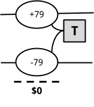
多个账户
可能存在许多这样的 transaction，涉及许多不同的 account。例如，如果账户所有者在第二天用信用卡支付了一顿午餐，可以通过创建一个专门用于跟踪现实世界信用卡余额的“Credit Card” account，并配以相应的 transaction 来表示：
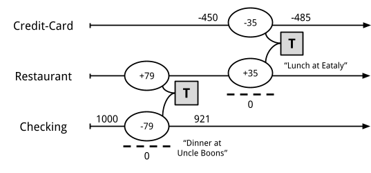
在这个例子中，所有者在一家名为“Eataly”的餐厅消费了 35 美元。所有者信用卡之前的余额为 -450 美元；在发生这笔支出后，新余额为 -485 美元。
对于每个现实世界的账户，所有者都可以像我们之前那样创建一个记账 account。此外，对于每个支出类别，所有者也会创建一个记账 account。在这个系统中，可以创建的 account 数量没有限制。
请注意，示例中的余额是一个负数；这不是错误。信用卡账户的余额通常为负数：它们代表你欠的金额，即银行赊账借给你的钱。当你的信用卡公司记录你的支出时，他们会从他们的角度出具账单，将其显示为正数。对你而言，这些是你最终需要支付的金额。但在这里，在我们的会计系统中，我们从所有者的角度来表示数字，从她的角度来看，这是她欠的钱，而不是她拥有的钱。我们拥有的是留在胃里的一顿饭（“Restaurant”中一个正数的 $ 金额）。
多 posting
最后，transaction 可以拥有超过两个 posting；事实上，它们可以拥有任意数量的 posting。唯一重要的是，它们金额的总和必须为零（基于上述复式记账规则）。
例如，让我们看看如果所有者在 12 月收到工资会发生什么：
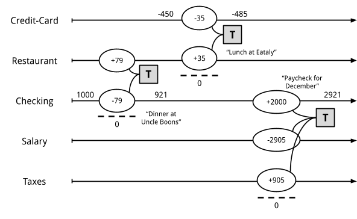
在此示例中，她收到的税前工资记录为 $-2,905（我稍后会解释符号的含义）。$905 被预留用于缴税。她的“净”工资 $2,000，即剩余部分，存入她的“Checking”账户，该账户的 resulting balance 为 $2,921（之前的余额 $921 + $2,000 = $2,921）。此 transaction 包含三个 posting：(+2,000) + (-2,905) + (+905) = 0。复式记账规则得到遵守。
现在，你可能会问：为什么她的工资被记录为负数？这里的推理与上述信用卡类似，但可能稍微微妙一些。这些 account 的存在是为了从所有者的角度跟踪所有金额。所有者付出工作，并以此换取金钱和税收（正金额）。付出的工作以美元单位计价。它“离开”了所有者（想象所有者口袋里存有潜在工作，每天去上班时，她将这种工作潜力撒出去，给予公司）。所有者付出了价值 $2,905 的工作。我们想要跟踪付出了多少工作，这通过“Salary” account 来完成。这就是她的税前工资。
请注意，为了保持简单，我们稍微简化了这张工资单 transaction。更现实地记录工资单会涉及更多 account；我们将分别记录州税和联邦税金额，以及社会保障和医疗保险支付、扣除项、通过工作支付的保险以及期间累积的休假时间。但这不会复杂多少：所有者只需将工资单上可用的所有金额转换为一个具有更多 posting 的单一 transaction。结构保持相似。
账户类型
现在，让我们把注意力转向所有者可能拥有的不同账户类型。
余额或差额。 首先，账户之间最重要的区别在于，我们关心的是在某个特定时间点的余额，还是只有关心在一段时间内的差额才有意义。例如，某人 Checking 或 Savings 账户的余额是一个有意义的数字，所有者及其对应的银行都会关心它。同样，某人 Credit Card 账户上的欠款总额也是有意义的。某人剩余的房屋 Mortgage 金额也是如此。
另一方面，某人自出生以来在餐厅的总支出并不是特别有趣。对于此类账户，我们可能关心的是在特定时间段内发生的餐厅支出金额。例如，“你上个月在餐厅花了多少钱？”或者上季度。或者去年。同样，某人几年前在一家公司开始工作以来的工资总额并不是很重要。但我们会关心一个纳税年度内获得的总金额，即在那段时间内的金额，因为它用于向税务机关报告收入。
-
在某个时间点余额有意义的账户被称为资产负债表账户。这类账户有两种：“资产”和“负债”。
-
其他账户，即余额本身没有特别意义，但我们感兴趣的是计算一段时间内变化的账户，被称为损益表账户。同样，也有两种：“收入”和“费用”。
正常符号。 其次，我们考虑账户余额的通常符号。在复式记账系统中，绝大多数账户的余额倾向于始终为正号，或始终为负号（尽管正如我们之前所见，账户余额的符号并非不可能改变）。这就是我们如何区分之前提到的账户对：
-
对于资产负债表账户，资产通常具有正余额，而负债通常具有负余额。
-
对于损益表账户，费用通常具有正余额，而收入账户通常具有负余额。
这种情况总结如下表所示：
| 余额：正 (+) | 余额：负 (-) | |
|---|---|---|
余额在 （资产负债表） | 资产 | 负债 |
余额的变化在 （损益表） | 费用 | 收入 |
让我们讨论每种账户类型并提供一些示例，以免内容过于抽象。
-
资产。 (+) 资产账户代表所有者拥有的东西。一个典型的例子是银行账户。另一个是“现金”账户，它计算你钱包里有多少钱。投资也是资产（在这种情况下，它们的单位不是美元，而是某只共同基金或股票的股数）。最后，如果你拥有一处住宅，住宅本身被视为资产（其 market value 随时间波动）。
-
负债。 (-) 负债账户代表所有者欠的东西。最常见的例子是信用卡。同样，银行提供的对账单会显示正数，但从你自己的角度来看，它们是负数。贷款也是一个负债账户。例如，如果你为房屋办理了抵押贷款，这是你欠的钱，将由一个具有负金额的账户进行跟踪。随着你每月偿还抵押贷款，负数会变大，即其绝对值随时间越来越小（例如，-120,000 -> -117,345）。
-
费用。 (+) 费用账户代表你收到的东西，可能是通过交换其他东西来购买的。这种类型的账户会显得相当自然：食物、饮料、服装、租金、机票、酒店以及你通常用可支配收入购买的大多数其他类别的物品。然而，税款通常也由费用账户进行跟踪：当你收到一些工资收入时，预扣的税款金额会立即记录为费用。可以将其视为为你全年收到的政府服务付费。
-
Income. (-) 收入账户用于记录你付出的某样东西，以换取其他东西（通常是资产或费用）。对于大多数有工作的人来说，这就是他们时间的价值（即工资收入）。具体来说，这里指的是税前收入。例如，如果你的年薪为 120,000 美元，这个数字就是 120,000 美元，而不是扣除税款后剩余的任何金额。其他类型的收入包括从投资中获得的股息，或从持有的债券中支付的利息。还有一些你可能记录为收入的零散收入，例如收到的奖励价值，比如信用卡返现，或来自他人的金钱礼物。
在 Beancount 中，所有账户名称，无一例外，必须关联到前面描述的账户类型之一。由于账户的类型在其生命周期内永远不会改变，按照惯例，我们将将其类型作为账户名称的一部分，作为一个前缀。例如，餐厅的限定账户名称将是 “Expenses:Restaurant”。对于银行支票账户，限定账户名称将是 “Assets:Checking”。
除此之外，你可以为你的账户选择任何你喜欢的名称。你可以创建任意数量的账户，并且正如我们稍后所见，你可以将它们组织成层级结构。截至本文撰写时，我正在使用超过 700 个账户来跟踪我的个人事务。
现在让我们重新审视我们的示例，并添加一些账户：
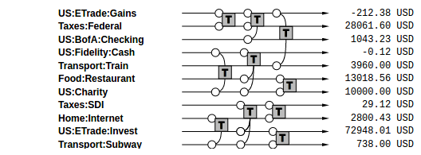
让我们想象还有更多的 transaction：
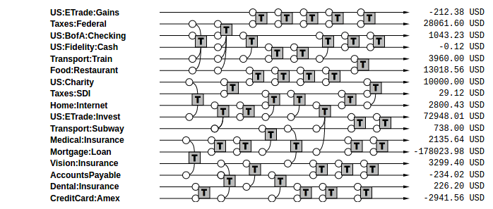
……甚至更多：
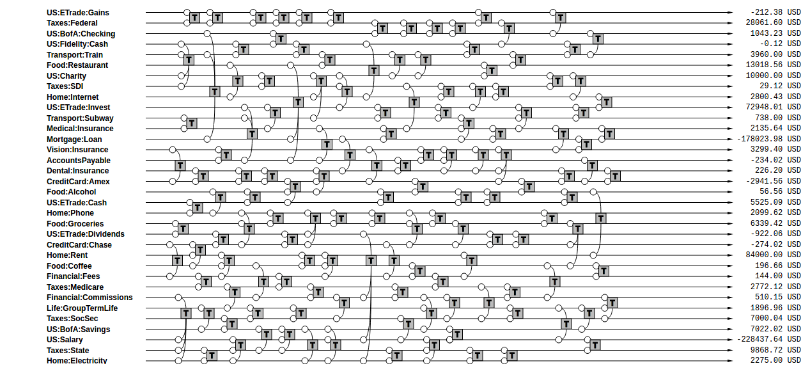
最后，我们可以通过在账户名称前添加类型，为这些账户中的每一个标记四种账户类型之一：
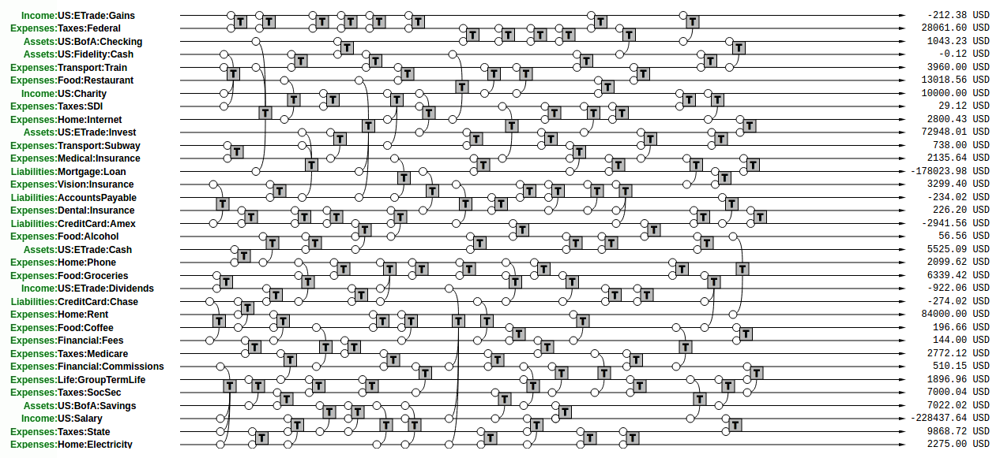
一个跟踪所有个人事务的人的 realistic book 可能每年轻松包含数千笔 transaction。但原则依然简单且保持不变：posting 随时间应用于 account，并且必须隶属于一个 transaction，并且在该 transaction 内，所有 posting 的总和为零。
当你为一组 account 进行 bookkeeping 时，你本质上是在描述随时间发生在所有 account 上的所有 posting，受规则约束。你正在一个 book 中创建这些 posting 的数据库。你正在“维护账簿”，即传统上包含所有这些 transaction 的账簿。有些人称之为“维护日志”。
现在我们将把注意力转向从这些数据中获取有用信息，汇总来自 book 的信息。
试算平衡表
以我们上一个例子为例：我们可以轻松地对所有 account 进行重新排序，使所有 Asset 账户集中显示在顶部，然后是 Liabilities 账户，接着是 Income，最后是 Expenses 账户。我们只是在不改变 transaction 结构的情况下调整顺序，以便将每种类型的账户归组在一起：
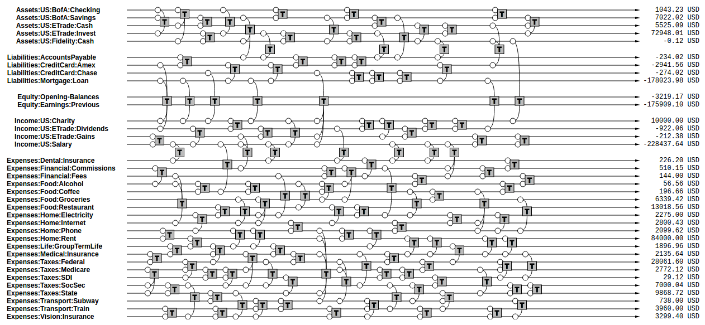
我们重新排列了账户，将 Asset 账户分组置于顶部，然后是 Liabilities，接着是一些 Equity 账户（我们刚刚引入，稍后会有更多讨论），然后是 Income，最后是底部的 Expenses。
如果我们汇总所有账户上的 posting，并仅显示账户名称及其右侧的最终 balance，我们就得到了一份我们称为“试算平衡表”的 report。
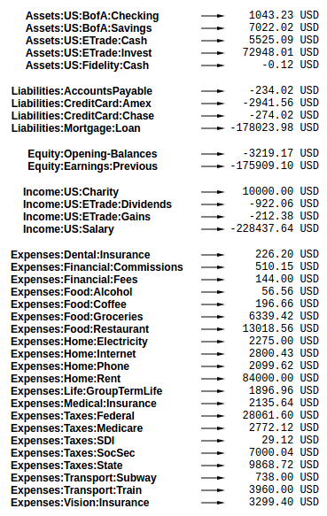
这仅仅反映了每个账户在特定时间点的 balance。由于每个账户的初始 balance 均为零，且每笔 transaction 本身的 balance 也为零，因此我们知道所有这些 balance 的总和必须等于零。1 这是由我们施加的约束所导致的：每个 posting 必须属于某笔 transaction，且每笔 transaction 中的 posting 必须相互平衡。
利润表
从 transaction 列表中提取的一种常见且有用的信息，是特定时间段内 income statement 账户变动的汇总。这告诉我们在此期间赚取和花费了多少资金，而两者的差额则表明产生了多少利润（或亏损）。我们称之为“净利润”（net income）。
为了生成此汇总，我们只需关注 Income 和 Expenses 类型账户的余额，仅对特定时间段内的 transaction 进行求和，并将 Income 余额列在左侧，Expenses 余额列在右侧：
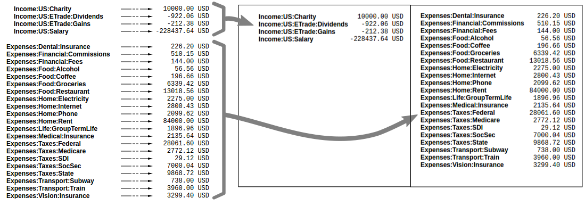
注意这里的符号非常重要：Income 数值为负，Expenses 数值为正。因此，如果你赚得比花得多（这是一个好的结果），Income + Expenses 余额的最终总和将是一个负数。与其他收入一样，如果净利润为负数，意味着存在相应金额的 Assets 和/或 Liabilities 为正数（这对你是有利的）。
Income Statement 告诉我们特定时间段内发生了什么变化。公司通常按季度向投资者以及公众（如果是上市公司）报告此信息，以分享其能够获得的利润。个人通常在其年度纳税申报表中报告此信息。
结清收入
请注意，在 income statement 中，只有特定时间区间内的 transaction 会被汇总。这使得例如计算一年内所有 earned income 的总和成为可能。如果我们汇总该 account 自创建以来的所有 transaction，我们将得到自该 account 创建以来所获得的总收入。
实现相同目的的一种更好方法是清零 Income 和 Expenses account 的余额。Beancount 将这种基本转换称为“clearing2”。其执行方式为：
-
计算这些 account 从时间起点到报告期初的余额。例如，如果你在 2000 年创建了 account，并希望生成 2016 年的 income statement，你需要汇总从 2000 年到 2016 年 1 月 1 日的余额。
-
插入 transaction 以清空这些余额，并将其转移到既不是 Income 也不是 Expenses 的其他 account。例如，如果餐厅费用 account 在这 16 年间的余额在 2016 年 1 月 1 日为 $85,321，系统将插入一笔 $-85,321 到餐厅 account 和 $+85,321 到“previous earnings”的 transaction。这些 transaction 的日期为 2016 年 1 月 1 日。包含这笔 transaction 后，该 account 在该日期的总和将归零。这正是我们想要的结果。
下方图中以绿色显示的是为所有 income statement account 插入的 transaction。现在，汇总整个 ledger 直到末尾的所有 transaction，将仅得出 2016 年期间的变化，因为该日期的余额为零：
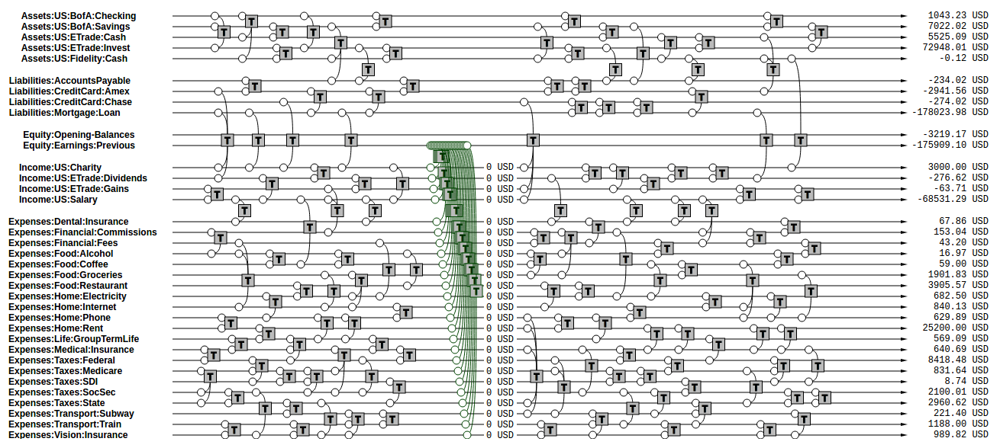
这就是 bean-query shell 中 “CLEAR” 操作的语义。
（请注意，对于 income statement account，实现相同目的的另一种方法是将 clearing 日期之后的 transaction 金额隔离并仅对这些 transaction 进行计数；然而，如果同时报告 income statement account 和 balance sheet account，balance sheet account 的余额将会不正确。）
equity
接收之前累积收入的账户被称为“Previous Earnings”（以前年度利润）。它属于第五种也是最后一种账户类型：Equity（权益）。我们之前没有讨论这种账户类型，因为它们通常仅用于转移金额以构建 report，所有者通常不会向这些类型的账户 post 变更；软件会自动完成此操作，例如在清除净利润时。
“equity”账户类型用于持有由所有过去活动所隐含的净利润汇总。其要点在于，如果我们现在将 Assets（资产）、Liabilities（负债）和 Equity（权益）账户列在一起，由于 Income（收入）和 Expenses（费用）账户已被清零，所有这些余额的总和应恰好等于零。而对所有 Equity 账户进行求和，则清楚地告诉我们在该实体中的权益份额，换句话说，如果你用资产偿还所有负债，企业中还剩多少……它的价值是多少。
请注意，Equity 账户的正常符号为负数。这本身没有特定含义，只是它们被用来抵消 Assets 和 Liabilities，如果所有者拥有任何价值，该数字应为负数。（负的 Equity 意味着正的净资产。）
Beancount 中使用了几个不同的 Equity 账户：
-
Previous Earnings 或 Retained Earnings（留存收益）。一个用于持有从时间开始到报告期间开始时 Income & Expenses 余额总和的账户。这就是我们在上一节中提到的账户。
-
Current Earnings，也称为 Net Income（净利润）。一个用于包含在报告期间期间发生的 Income & Expenses 余额总和的账户。它们通过在报告期间结束时“清除”Income & Expenses 账户来填充。
-
Opening Balances（期初余额）。一个用于抵消用于初始化账户的存款的权益账户。当我们截断过去的 transaction 历史，但同时也需要确保账户余额以特定金额开始其历史时，会使用这种类型的账户。
再次强调：你不需要自己定义或使用这些账户，因为这些账户是为汇总 transaction 而创建的。通常，这些账户由上述清除过程填充，或由 Pad 指令填充到“opening balances”权益账户中，以反映来自过去的汇总余额。它们由软件自动创建和填充。我们将在后续章节中看到这些账户是如何被使用的。
资产负债表
另一种汇总形式是列出每个账户中所有者的资产和负债。这回答了这样一个问题：“钱在哪里？” 理论上，我们可以将关注点仅限于 Assets 和 Liabilities 账户，并在 report 中列出它们：
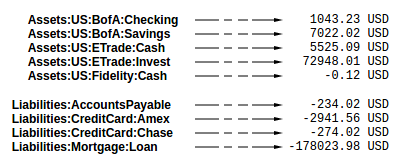
然而，在实践中，通常还会同时回答另一个密切相关的问题：“还清所有债务后，我们还剩下多少？” 这被称为 net worth。
如果 Income & Expenses 账户已清零，且其所有余额已转入 Equity 账户，那么 net worth 应等于所有 Equity 账户的总和。因此，在构建资产负债表时，惯例是先清零净利润，然后显示 Equity 账户的余额。该 report 看起来像这样：
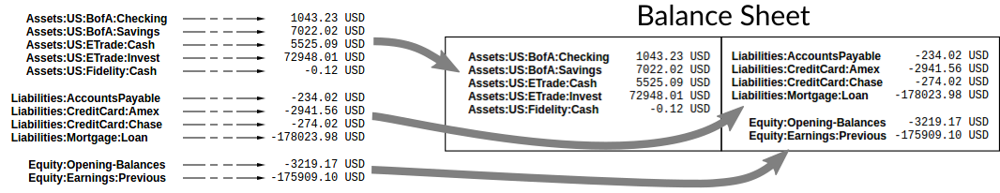
请注意，资产负债表可以为任意时间点绘制，只需截断特定日期之后的 transaction 列表即可。资产负债表显示的是某一日期余额的快照；而损益表显示的是两个日期之间这些余额的差异。
总结
将过去的 transaction 历史总结为单笔等效的存款是有用的。例如，如果我们关注某账户在 2016 年的 transaction，且该账户在 2016 年 1 月 1 日的余额为 450 美元，我们可以删除所有之前的 transaction，并用一笔在 2015 年 12 月 31 日存入 450 美元并从其他来源扣除的 transaction 来替代它们。
那个“其他来源”将是 Equity 账户 Opening Balances。首先，我们可以对所有 Assets 和 Liabilities 账户执行此操作（参见蓝色的 transaction）：
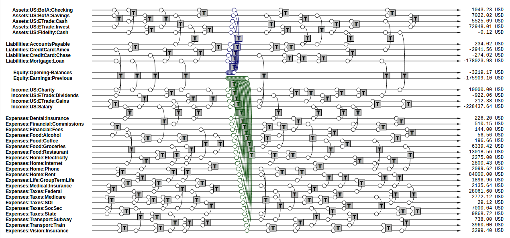
然后，我们删除所有早于起始日期的 transaction，从而获得一个截断的 transaction 列表：
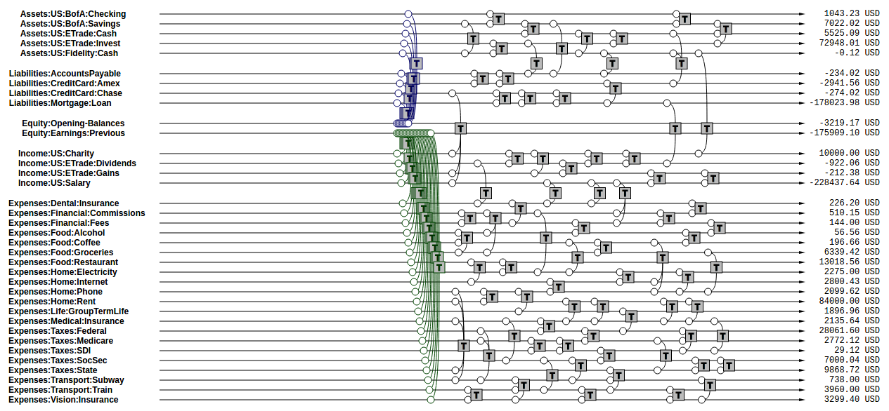
当我们专注于特定时间区间的 transaction 时，这是一个有用的操作。
（这涉及一些实现细节：这些操作与 Beancount 的设计方式相关。而不是让所有 report 操作都带有参数，其所有 report 例程都被简化了，转而直接操作整个 transaction 流；通过这种方式，我们将 transaction 列表转换为仅包含我们要 report 的数据。在这种情况下，总结只是一个转换，它接受完整的 transaction 集并返回一个等效的截断流。然后，从这个流中，可以生成一个排除过去 transaction 的 journal。
从程序设计角度来看，这很有吸引力，因为程序的唯一状态是一个 transaction 流，并且它永远不会被直接修改。这既简单又稳健。）
期间报告
现在我们知道，通过“清零”并仅查看 Income & Expenses 账户（即 Income Statement），可以生成一段时间内的变动报表。我们也知道，可以通过清零来生成任意时点的 Assets、Liabilities & Equity 快照（即 Balance Sheet）。
更一般地，我们关注的是检查特定的时间段。这意味着需要一份 income statement，但还需要两份 balance sheet：一份是期间开始时的 balance sheet，另一份是期间结束时的 balance sheet。
为了做到这一点，我们应用以下转换：
-
Open。 我们首先在期间开始时清零净利润，将所有之前的收入余额转移到 Equity 的 Previous Earnings 账户。然后我们汇总到期间开始时的状态。我们将清零 + 汇总的组合称为“Opening”。
-
Close。 我们还截断报告期间结束之后的所有 transaction。我们将此操作称为“Closing”。
这就是 bean-query shell 中“OPEN”和“CLOSE”操作的含义3。生成的 transaction 集合应该如下所示。
“Closing”涉及两个步骤。首先，我们移除所有在关闭日期之后的 transaction：
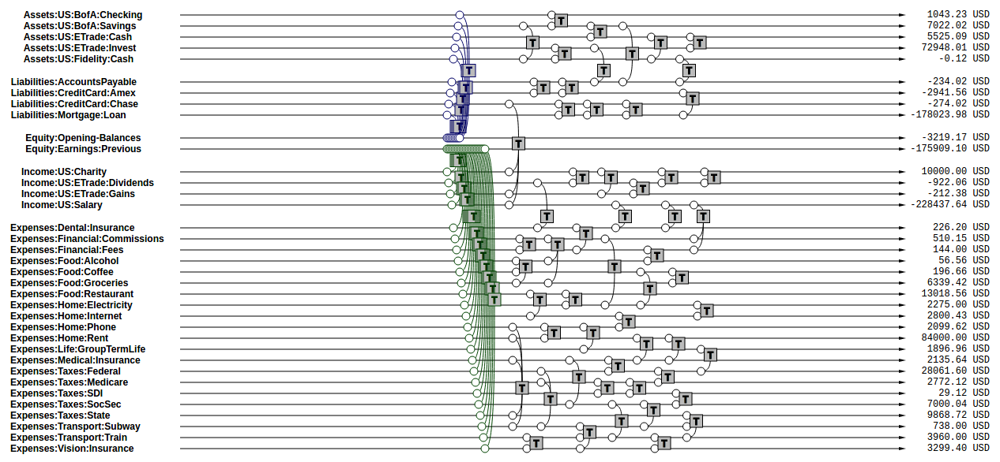
我们可以处理这个 transaction 流，以生成该期间的 Income Statement。
然后我们在所需报告的结束日期再次清零，但这次我们将净利润清零到“Equity:Earnings:Current”：
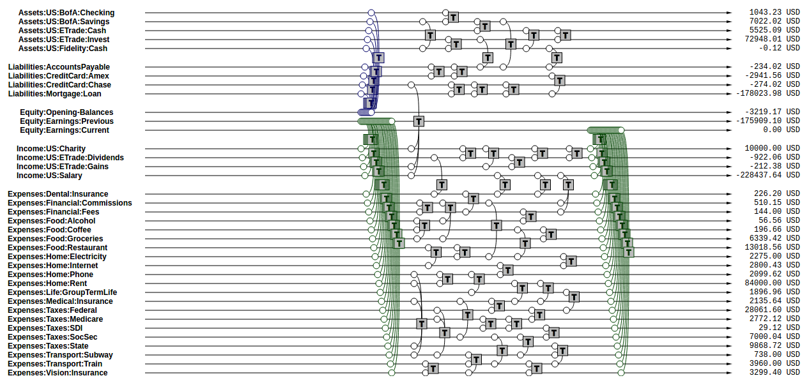
从这些 transaction 中，我们生成期间结束时的 Balance Sheet。
这总结了使用 Beancount 生成报告所涉及的操作，以及这些类型报告的基本介绍。
账户表
新用户常常疑惑在账户名称中应使用多少细节。例如，是否应在账户名称本身中包含收款方，如下例所示？
Expenses:Phone:Mobile:VerizonWireless
Assets:AccountsReceivable:Clients:AcmeInc
还是应该使用更简单的名称，如下所示，转而依赖“payee”、“tags”或可能其他元数据来对 postings 进行分组？
Expenses:Phone
Assets:AccountsReceivable
答案是取决于你。这是一个任意的选择。这是口味问题。我个人喜欢稍微滥用账户名称，创建较长的描述性名称，而其他人则倾向于保持简单，并使用 tags 来分组他们的 postings。有时甚至不需要过滤 postings 的子组。没有正确答案，这取决于你想做什么。
需要考虑的一点是，账户名称隐式地定义了一个层级结构。“:”分隔符被某些 report 代码解释为创建内存中的树，并允许你折叠节点的子账户并计算父级的聚合值。可以将其视为对 postings 进行分组的另一种方式。
国家-机构约定
我发明的一种对我的资产、负债和收入账户行之有效的约定是，以账户所在国家的代码作为树的根，后跟一个表示对应机构的短字符串。在其下，为该机构中的特定账户使用一个唯一名称。如下所示：
<type> : <country> : <institution> : <account>
例如，支票账户可以选为“Assets:US:BofA:Checking”，其中“BofA”代表“Bank of America”。信用卡账户可以将特定类型的卡片名称作为账户名称，例如“Liabilities:US:Amex:Platinum”，如果你有多张卡片，这会很有用。
我发现对我的支出账户使用这种方案没有意义，因为它们往往代表通用类别。对于这些，按类别分组似乎更有意义，例如使用“Expenses:Food:Restaurant”而不是仅仅使用“Expenses:Restaurant”。
无论如何，Beancount 除了根账户外不强制任何内容；这只是一个建议，此约定未在软件的任何地方编码。你有极大的自由去实验，并且可以通过处理文本文件轻松地在以后更改所有名称。请参阅食谱以获取更多实用指导。
贷方与借方
到目前为止，我们尚未讨论“贷方”和“借方”的概念。这是有意为之：Beancount 在很大程度上摒弃了这些概念，因为它使其他一切都变得更加简单。我认为，与其处理借方和贷方的术语并对不同类别的 account 进行区别对待，不如直接学习 Income、Liabilities 和 Equity 账户的符号通常为负，并将所有 account 以相同方式处理，这样更简单。无论如何，本节将解释这些概念是什么。
正如我在前面章节中指出的，我们认为 “Income”、“Liabilities” 和 “Equity” 账户通常具有负余额。这听起来可能很奇怪；毕竟，没有人会认为自己的税前工资是负数，而且你的信用卡账单或抵押贷款报表上报告的肯定是正数。这是因为在我们的复式记账系统中，我们考虑所有 account 都是从账户所有者的角度持有的。我们从这个角度使用一致的符号，因为它使所有针对账户内容的操作变得直接明了：它们都只是简单的加法，并且所有 account 都以相同方式处理。
相比之下，会计师传统上将所有账户余额保持为正数，然后根据 posting 所应用的 account 类型，以不同方式处理对这些 account 的 posting。应用于每个 account 的符号完全由其类型决定：Assets 和 Expenses 账户是借方账户，而 Liabilities、Equity 和 Income 账户是贷方账户，需要进行符号调整。此外，在 account 上 posting 正数金额被称为“借记”（debiting），而从 account 中移除则被称为“贷记”（crediting）。例如，参见这份外部文档，它几乎让我头痛欲裂，而这个最近的帖子提供了更多细节。这种处理 posting 的方式使一切变得比必要的复杂得多。
这种方法的问题在于，对 transaction 的 posting 进行金额求和不再是一个直接的求和过程。例如，假设你正在创建一个包含两个 Assets 账户、一个 Expenses 账户和一个 Income 账户的 posting 的新 transaction，系统告诉你某处存在 $9.95 的不平衡错误。你正专注地盯着该条目；哪个 posting 太小了？还是某个 posting 太大了？此外，也许需要添加一个新的 posting，但它是针对借方账户还是贷方账户？完成此操作所需的心智体操是令人疲惫的。一些复式记账软件试图通过为借方和贷方创建单独的列，并允许用户仅在与每个 posting account 类型对应的列中输入金额来处理这个问题。这在视觉上有所帮助，但为什么不直接使用符号呢？
此外，当你查看会计等式时，你还必须考虑它们的符号。这使得对它们进行变换变得尴尬，并将本质上是对 posting 的简单求和变成一团难以理解的复杂乱麻。
在纯文本记账中，我们宁愿摆脱这些不便的包袱。我们到处使用加法，并学会记住 Liabilities、Equity 和 Income 账户通常具有负余额。虽然这不寻常，但更容易理解。如果确实需要查看仅包含正数的传统 report，我们将能够在 report 代码4中触发该功能，仅反转符号以在输出中渲染它们。
为自己省去一些痛苦：将“借方”和“贷方”术语从你的脑海中清除。
会计等式
基于前文所述，我们可以轻松地将会计等式表示为带符号的形式。如果：
-
A = 所有 Assets posting 的总和
-
L = 所有 Liabilities posting 的总和
-
X = 所有 Expenses posting 的总和
-
I = 所有 Income posting 的总和
-
E = 所有 Equity posting 的总和
我们可以说：
A + L + E + X + I = 0
这源于以下事实：
sum(all postings) = 0
而这又源于每个 transaction 的总和保证为零（这一点由 Beancount 强制执行）：
for all transactions t, sum(postings of t) = 0
此外，Income 和 Expenses 的 posting 总和即为净利润（NI）：
NI = X + I
如果我们调整 Equity 以反映净利润的总影响，即将 Income 结转至 Equity 的留存收益账户，我们将得到一个更新后的 Equity 值（E’）：
E’ = E + NI = E + X + I
于是我们得到了一个简化的会计等式：
A + L + E’ = 0
如果我们调整贷方和借方的符号（参见上一节），并使所有总和均为正数，这就变成了我们熟悉的会计等式：
Assets - Liabilities = Equity
如您所见，始终直接对数字求和要容易得多。
纯文本记账
好的，现在我们在理论上理解了该方法及其能为我们带来的作用。复式记账系统的目的是让你能够将发生在各个现实世界账户中的 transaction 复制到单一、统一的系统中，以通用的表示形式进行记录，并从中提取各种视图和 report。现在让我们把注意力转向如何在实践中记录这些数据。
本文档讨论的是 Beancount，其宗旨是“使用文本文件进行复式记账”。Beancount 实现了一个解析器，用于一种简单的语法，允许你记录 transaction 和 posting。一个示例 transaction 的语法大致如下：
2016-12-06 * "Biang!" "Dinner"
Liabilities:CreditCard -47.23 USD
Expenses:Restaurants
你在文件中编写许多这样的声明，Beancount 会读取该文件并在内存中创建相应的数据结构。
验证。 在解析 transaction 之后，Beancount 还会验证复式记账法的规则：它检查所有 transaction 中 posting 的总和是否为零。如果你犯了错误，记录了一个余额不为零的 transaction，系统将显示错误。
Balance assertion。 Beancount 允许你复制从外部账户声明的余额，例如月度对账单上列出的余额。它会处理这些数据，并检查由你输入的 transaction 得出的余额是否与声明的余额相匹配。这有助于你轻松检测和发现错误。
插件。 Beancount 允许你构建程序，以自动化和/或处理输入文件中的 transaction 流。你可以通过编写直接处理 transaction 流的代码来构建自定义功能。
查询与报告。 它提供了工具来处理此 transaction 流，以生成我们在本文档前面讨论过的那类 report。
还有一些其他细节，例如，Beancount 允许你跟踪 cost basis 并进行货币转换，但这就是其核心所在。
表格视角
几乎在所有情况下，用户在邮件列表上提出的关于如何计算或跟踪某些数值的问题，都可以通过将数据视为一个长行列表来轻松解决，其中部分行需要进行过滤和聚合。如果你考虑到我们最终所做的只是对这些 posting 求“和”，而 transaction 和 posting 的属性正是我们用来过滤 posting 子集的依据，那么事情就变得非常简单。在几乎所有情况下，答案都是找到某种方式来区分 posting 以便选择它们，例如通过 account 名称、附加某些标签、使用某些元数据等。考虑这些数据如何表示为表格可能会很有启发性。
想象一下你有两个表：一个包含每个 Transaction 字段的表，例如日期和描述；另一个包含每个 Posting 字段的表，例如 account、金额和货币，以及对父级 transaction 的引用。表示数据最简单的方法是将这两个表进行 join（连接），将父级 transaction 的值复制到每个 posting 中。
例如，以下 Beancount 输入：
2016-12-04 * "Christmas gift"
Liabilities:CreditCard -153.45 USD
Expenses:Gifts
2016-12-06 * "Biang!" "Dinner"
Liabilities:CreditCard -47.23 USD
Expenses:Restaurants
2016-12-07 * "Pouring Ribbons" "Drinks with friends"
Assets:Cash -25.00 USD
Expenses:Tips 4.00 USD
Expenses:Alcohol
可以渲染为如下表格：
| Date | Fl | Payee | Narration | Account | Number | Ccy |
|---|---|---|---|---|---|---|
| 2016-12-04 | * | Christmas gift | Liabilities:CreditCard | -153.45 | USD | |
| 2016-12-04 | * | Christmas gift | Expenses:Gifts | 153.45 | USD | |
| 2016-12-06 | * | Biang! | Dinner | Liabilities:CreditCard | -47.23 | USD |
| 2016-12-06 | * | Biang! | Dinner | Expenses:Restaurants | 47.23 | USD |
| 2016-12-07 | * | Pouring Ribbons | Drinks with friends | Assets:Cash | -25.00 | USD |
| 2016-12-07 | * | Pouring Ribbons | Drinks with friends | Expenses:Tips | 4.00 | USD |
| 2016-12-07 | * | Pouring Ribbons | Drinks with friends | Expenses:Alcohol | 21.00 | USD |
请注意，Transaction 字段的值在每个 posting 中都被复制了。这完全类似于常规的数据库 join 操作。Posting 字段从“Account”列开始。（另外请注意，此示例表格是简化的；实际上还有更多字段。）
如果你有一个像这样的连接表，你可以对其进行过滤，并对任意 posting 组的金额求和。这正是 bean-query 工具允许你做的事情：你可以对等效于此内存表的数据运行 SQL 查询，并列出如下值：
SELECT date, payee, number WHERE account = "Liabilities:CreditCard";
或者像这样对头寸求和：
SELECT account, sum(position) GROUP BY account;
这个简单的最后命令生成了试算平衡表 report。
请注意，表格表示本身并不强制要求 posting 之和为零。如果你的行选择标准（在 WHERE 子句中）始终选择每个匹配 transaction 的 所有 posting，那么你可以确保所有 posting 的最终总和为零。如果不是，总和可能是其他任何值。这只是需要记住的一点。
如果你熟悉 SQL 数据库，你可能会问为什么 Beancount 不简单地处理其数据以填充现有的数据库系统，从而让用户可以使用那些数据库的工具。主要有两个原因：
-
Reporting Operations. 为了生成损益表和资产负债表，transaction 列表需要使用前面描述的 clear、open 和 close 操作进行预处理。这些操作在数据库查询中实现起来并不简单，并且仅依赖于 report，理想情况下不需要修改输入数据。我们必须将 posting 数据加载到内存中，然后运行一些代码。我们在解析输入文件时已经在做这件事了；数据库步骤将是多余的。
-
聚合头寸。 尽管本文档此前尚未讨论，账户的内容可能包含不同类型的商品，以及附带 cost basis 的头寸。这些头寸的聚合方式需要实现一种自定义数据类型，因为它遵循一些关于头寸如何相互抵消的规则（详见 库存如何运作）。如果仅限于使用单一货币并忽略 cost basis 的上下文，要在 SQL 数据库中构建这些操作将非常困难。
这就是为什么 Beancount 提供了一个自定义工具来直接处理和查询其数据：它提供了自己的 SQL 客户端实现，允许你指定开始和结束日期，并利用自定义的 “Inventory” 数据结构来创建 posting 头寸的总和。该工具支持 Beancount 核心类型的列：Amount、Position 和 Inventory 对象。
（无论如何，如果你对此持怀疑态度，Beancount 提供了一个 工具，可以将内容导出到常规的 SQL 数据库系统。如果你愿意，不妨自行尝试，尽管放手去做。）
版权与许可：原文 © Martin Blais / beancount/docs contributors，MIT License。中文翻译为非官方 derivative work，仅供个人学习；详见 NOTICE.md。